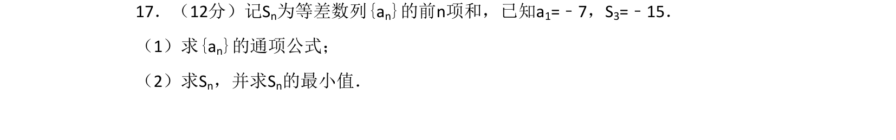
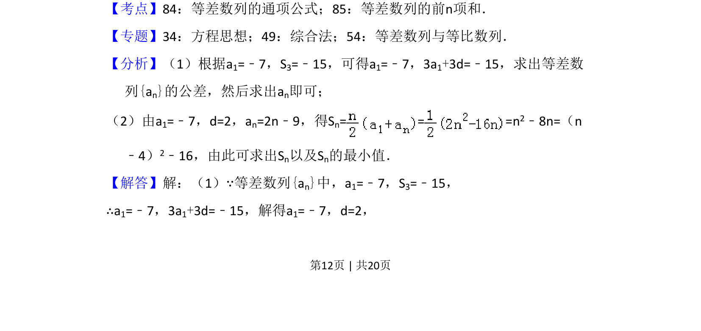
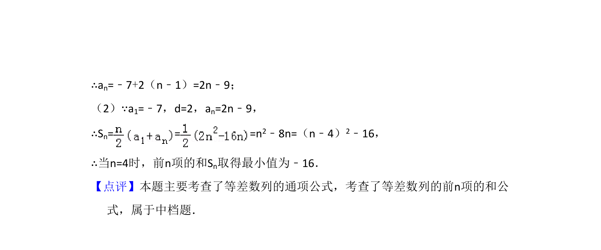

考点：等差数列通项公式 等差数列前n项和

已知等差数列首项及前3项和，求通项公式及前n项和的最小值。


📄 原 PDF 第 12 页：
素材/真题/吉林/2008-2024·（吉林）数学高考真题/2018年高考数学试卷（文）（新课标Ⅱ）（解析卷）.pdf
17．（12分）记Sn为等差数列{an}的前n项和，已知a1=﹣7，S3=﹣15． （1）求{an}的通项公式； （2）求Sn，并求Sn的最小值．
【考点】84：等差数列的通项公式；85：等差数列的前n项和．菁优网版权所有 【专题】34：方程思想；49：综合法；54：等差数列与等比数列． 【分析】（1）根据a1=﹣7，S3=﹣15，可得a1=﹣7，3a1+3d=﹣15，求出等差数 列{an}的公差，然后求出an即可； （2）由a1=﹣7，d=2，an=2n﹣9，得Sn= = =n 2﹣8n=（n ﹣4）2﹣16，由此可求出Sn以及Sn的最小值． 【解答】解：（1）∵等差数列{an}中，a1=﹣7，S3=﹣15， ∴a1=﹣7，3a1+3d=﹣15，解得a1=﹣7，d=2，